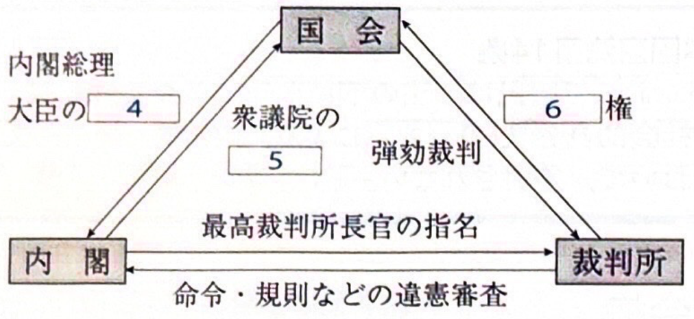

政治・経済
日本国憲法・人権
第12条（自由・権利の保持義務）
この憲法が国民に保障する自由及び権利は、国民の不断の努力によって、これを保持しなければならない。又、国民は、これを濫用してはならないのであって、常に公共の福祉のためにこれを利用する責任を負ふ。
第13条（個人の尊重）
すべて国民は、個人として尊重される。生命、自由及び幸福追求に対する国民の権利については、公共の福祉に反しない限り、立法その他の国政の上で、最大の尊重を必要とする。
第25条（生存権）
すべて国民は、健康で文化的な最低限度の生活を営む権利を有する。
第26条（教育を受ける権利）
すべて国民は、法律の定めるところにより、その能力に応じて、ひとしく教育を受ける権利を有する。
統治機構（三権分立）

- 4（内閣→国会）：内閣総理大臣の指名
- 5（内閣→衆議院）：衆議院の解散
- 6（裁判所→国会）：違憲立法審査権
- 通常国会（常会）：毎年1回、1月に召集。会期は150日。
- 臨時国会（臨時会）：内閣が必要と認めたとき、またはいずれかの議院の総議員の4分の1以上の要求があったとき。
- 特別国会：衆議院の解散総選挙後、30日以内に召集。内閣総理大臣の指名を行う。
- 参議院の緊急集会：衆議院の解散中、緊急の必要が生じたとき、内閣が開催を求める。
衆議院の優越
両議院の議決が異なり、両院協議会を開いても一致しない場合など、衆議院の議決が優先される。
| 法律案 | 衆議院で可決後、60日以内に参議院が議決しない場合、衆議院が出席議員の3分の2以上の多数で再可決すれば成立。 |
|---|---|
| 予算・条約 | 衆議院に先議権あり。衆議院の議決後、30日以内に参議院が議決しないときは衆議院の議決が国会の議決となる。 |
| 首相指名 | 衆議院の指名後、10日以内に参議院が指名の議決をしないときは衆議院の議決が国会の議決となる。 |
経済（市場・財政）
需要と供給
- 需要量：価格が上昇すると減少し、下落すると増加する。（需要曲線は右下がり）
- 供給量：価格が上昇すると増加し、下落すると減少する。（供給曲線は右上がり）
租税の分類
- 直接税：担税者と納税者が同一（所得税、法人税など）。
- 間接税：担税者と納税者が異なる（消費税、酒税など）。
- 累進課税：所得の多い人ほど高税率。所得再分配機能がある。（例：所得税）
- 逆進性：所得の低い者ほど所得に対する税負担の割合が大きくなる性質。（例：消費税などの大衆課税）
労働と法
- 労働基準法：労働条件の最低基準を定める（賃金、労働時間など）。
- 労働組合法：労働者の団結権、団体交渉権、団体行動権などを保障。
- 労働関係調整法：労使紛争の予防・解決（斡旋、調停、仲裁）を定める。
- 男女雇用機会均等法：職場での男女差別禁止（1985年制定）。
- 男女共同参画社会基本法：男女が対等な構成員として参画する社会を目指す。
国際連合
安全保障理事会
平和と安全に主要な責任を負う。
- 構成：常任理事国5カ国 ＋ 非常任理事国10カ国（任期2年）。
- 常任理事国：アメリカ、イギリス、フランス、ロシア、中国。（拒否権を持つ）
- 表決（実質事項）：全常任理事国を含む9理事国以上の賛成が必要。
| ILO | 国際労働機関。労働条件の改善。 |
|---|---|
| UNESCO | 国連教育科学文化機関。教育・文化で平和貢献。 |
| WHO | 世界保健機関。公衆衛生の向上。 |
| FAO | 国連食糧農業機関。食糧生産、農村生活改善。 |
| IMF | 国際通貨基金。国際通貨の安定、短期融資。 |